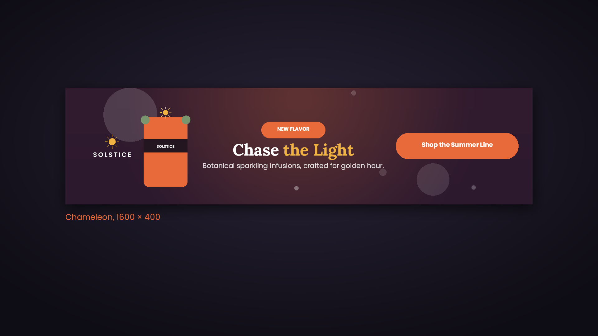
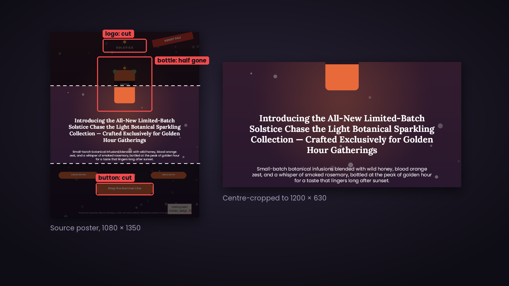
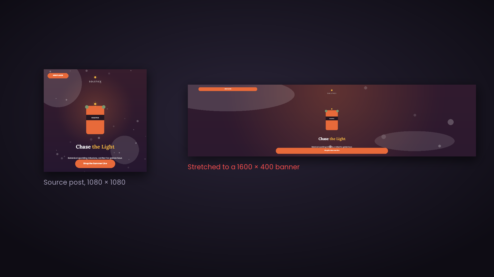
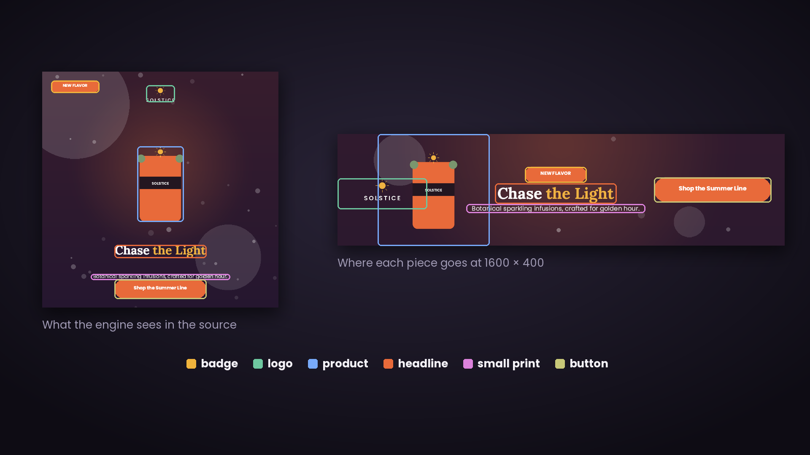
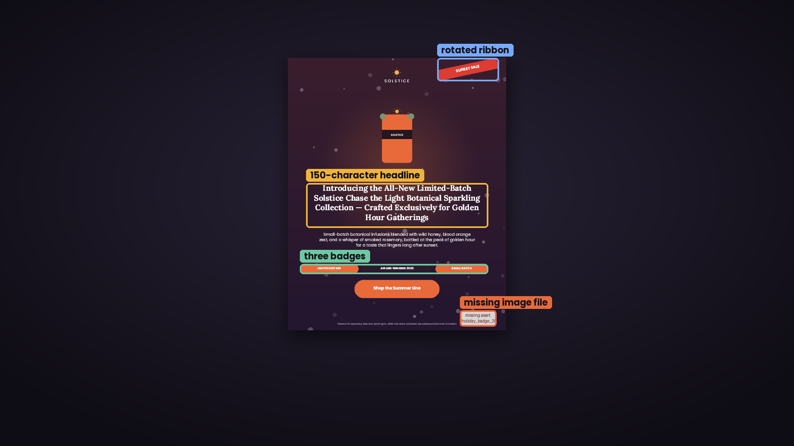
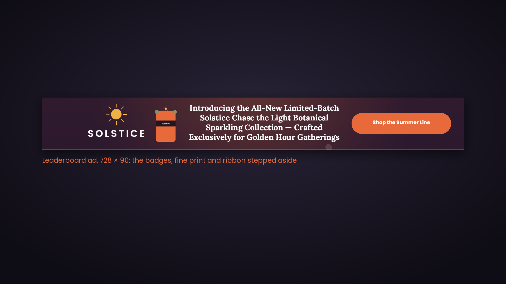
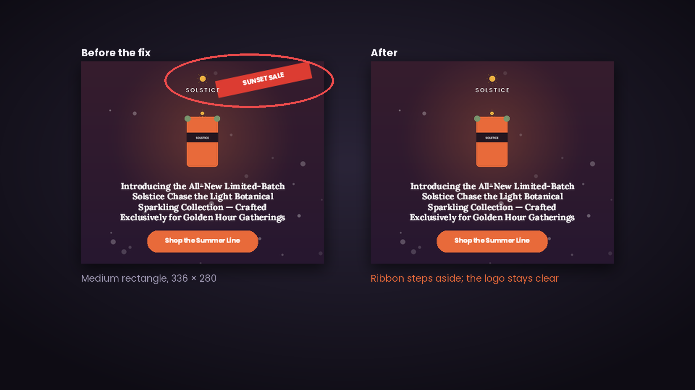
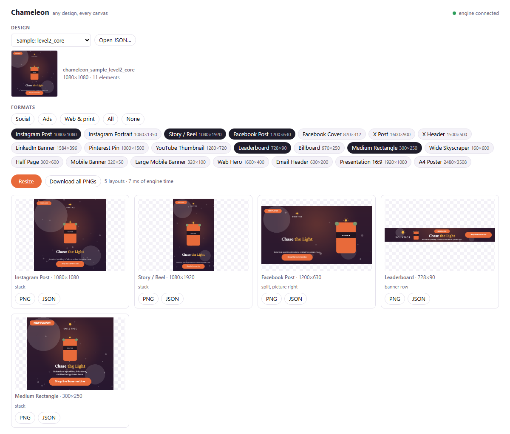

Adobe University Hackathon 2026 · Chameleon Challenge · stage one
We built a resize engine that picks up the pieces of a design and puts them down again for the new canvas, instead of stretching or cropping the whole thing.


We started where the brief did. Take the 1080 × 1350 poster from the starter kit and ask for a 1200 × 630 Facebook post.
A centre crop loses the logo, the button and half the bottle. Stretching (below) keeps everything, but squashes it until you can't read it.


The input has no labels, so the engine works them out: text on a shape is a button, the biggest type is the headline, a small picture near the top is probably the logo. A badge and its label move as one piece.
Then it picks a layout for the shape and finds the largest size where every line still fits, measured with the renderer's own fonts.
| Square or taller than wide | Rows, top to bottom, in the source's reading order and spacing |
| Landscape, up to about 2.4 : 1 | Product on one side, the text column on the other (scored against rows) |
| Wider than that | One row: pictures, then the text stack, then the button |

The level 3 poster has a 150-character headline, three badges, a rotated ribbon and an image file that doesn't exist.
At 728 × 90 there is no room for all of it. The least important pieces go first: small print, then the ribbon, then the badges, then the subhead. Each one goes only if removing it makes the rest more readable. The logo and the headline always stay.
Removed elements are hidden (opacity 0), never deleted, so ids and counts match the source.


In our last round of checks we rendered every sample at a dozen formats we had never tested. At 336 × 280 the SUNSET SALE ribbon landed right on the logo.
Corner stickers were allowed to overlap pictures, which is what you want for a price tag on a bottle. But the logo is a picture of a word.
The fix was one condition: stickers now treat the logo like text. When there's no room, the ribbon steps aside instead.
| 3 official samples and 7 stress designs, each at 20 real formats | 200 resizes. Every hard rule is asserted: ids, in-canvas (rotation included), image proportions, unchanged copy |
| Does the text really fit? | Checked with the renderer's own line wrapping, so "fits" means fits in the PNG, not just in our maths |
| 1,500 randomly generated designs | No crashes, no rule violations, no fallbacks |
| Speed | 1 to 150 ms per layout. Deterministic, offline, no model |
| The Docker image | Built for linux/amd64 and run with --network none in CI on every push, like the scorer |
| Pixels generated | None. Only positions, sizes and font sizes change |

The add-on runs the same engine on the page you're editing. Pick some formats and press Resize. Each one is added as a new page with real text and shapes you can keep editing.
Anything the engine set aside is hidden on that page, not deleted, so you can bring it back.
Each result says what it did, for example "banner row · 3 secondary elements set aside".
Engine, add-on, tests and this deck: github.com/UditDewan/chameleon-adobe-hackathon